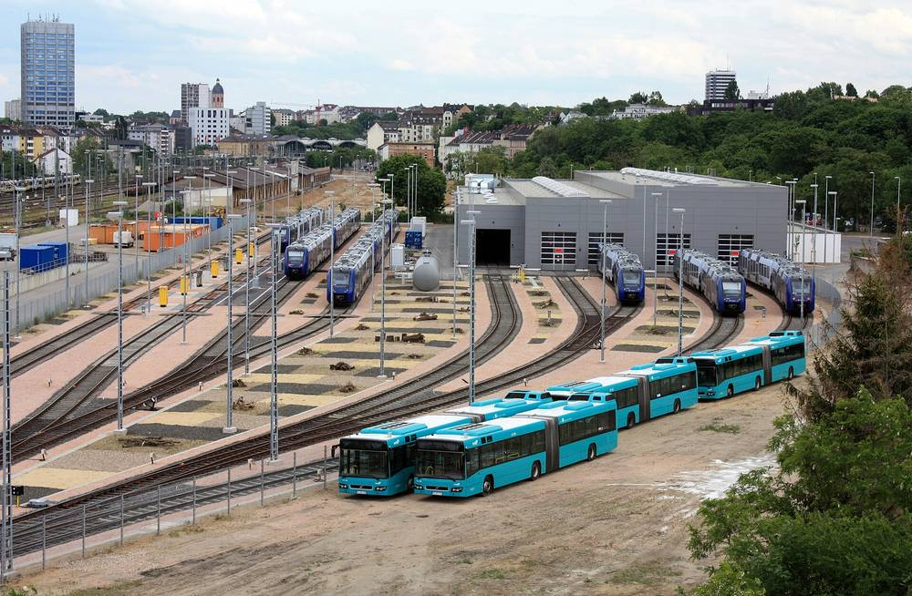

독일 마인츠 시민에너지협동조합 UrStrom, 철도회사 지붕 태양광의 남는 전기를 이웃과 나누는 에너지 공유 시범 사업 신청 받아

한 해 약 30만kWh 가운데 3분의 2 남짓은 건물 주인이 쓰고 한낮 잉여 전기를 공공 전력망으로 장부상 공유…조합원 아니어도 참여, 일반 요금보다 싸다는 조합 설명
독일 마인츠의 시민에너지협동조합 'UrStrom'이 이웃 건물 지붕 태양광에서 남는 전기를 공공 전력망을 거쳐 근처 가정과 사업자에게 나누는 '에너지 공유' 시범 사업을 시작하고, 부담 없이 미리 참여 신청을 받고 있다. 전기는 마인츠 중앙역 근처 몸바허 거리에 있는 철도회사 vlexx 본사 지붕 태양광에서 나오며, 조합 설명으로는 이 설비가 한 해 약 30만kWh를 만들어 3분의 2 남짓을 vlexx가 직접 쓰고 주로 한낮에 남는 전기를 다른 고객에게 돌린다. 참여자는 UrStrom 조합원이 아니어도 되지만 하이델베르크에 본부를 둔 시민에너지 연합 '뷔르거베르케(Bürgerwerke)'의 전기 고객이어야 하고, 조합은 공유망 안 구매 단가가 뷔르거베르케 일반 요금보다 싸고 가격도 안정적으로 지킨다고 밝혔으며, 전용 전선을 따로 놓는 것이 아니라 전력망 전체에서 장부상으로 맞추는 방식이다. 조합원 약 1,000명의 UrStrom은 마인츠와 주변에서 태양광 33곳을 운영하고, 100곳 남짓의 협동조합이 모인 뷔르거베르케와 함께 이번 사업에 투자했다. 독일 에너지산업법(EnWG)은 올해 6월부터 재생에너지 전기를 공공 전력망으로 이웃과 나누는 것을 허용했는데, 조합은 제도가 아직 무르익지 않았지만 기다리지 않고 먼저 나섰다고 했고, 플로리안 그로스 이사는 외부 비용이 많고 법으로 정한 스마트 계량기 보급이 더뎌 에너지 공유가 아직 복잡하다며 집 사정과 상관없이 누구나 참여할 수 있는 상품을 이번에 시험한다고 설명했다. 크리스토프 뷔르츠부르거 이사는 "시민에너지의 미래는 지역 사람들과 전기를 나누는 것"이라고 말했다.
시민에너지 관점
독일은 2017년 세입자 전기(Mieterstrom) 지원 제도를 만들어 건물 지붕 태양광 전기를 그 건물 세입자에게 직접 파는 길을 열었지만, 공공 전력망을 거쳐 동네 전체와 나누는 길은 올해 6월 에너지 공유가 허용되고서야 열렸다. 전선을 따로 놓지 않고 장부로만 맞추는 나눔이 무슨 뜻이냐는 의문이 있을 수 있지만, 한낮에 남는 전기를 가까운 수요와 묶어 값을 낮추면 지붕 없는 주민도 지역 태양광의 이익을 얻고 전력망 부담도 덜 수 있다. 무엇보다 남의 지붕을 빌린 설비라도 시민이 출자한 협동조합이 소유하고 운영하기에 이익이 대기업이 아닌 지역에 남는다. 국내도 공공·기업 건물 지붕 태양광의 남는 전기를 주민 조직이 이웃과 나눌 수 있도록 전력 공유 제도를 열고, 그 바탕이 될 스마트 계량기 보급을 함께 서둘러야 한다.
출처: Allgemeine Zeitung 2026-11-02 Torben Schröder 원문 보기
ドイツ・マインツの市民エネルギー協同組合UrStrom、鉄道会社の屋根の太陽光の余剰電力を近隣と分け合うエネルギー共有の試行事業で参加受け付け
年約30万kWhのうち3分の2強は建物の持ち主が使い、昼間の余剰電力を公共の電力網を通じて帳簿上で共有…組合員でなくても参加でき、通常料金より安いと組合が説明
ドイツ・マインツの市民エネルギー協同組合「UrStrom」が、近隣の建物の屋根にある太陽光発電の余剰電力を公共の電力網を通じて近くの家庭や事業者に分ける「エネルギー共有」の試行事業を始め、気軽に事前の参加申し込みを受け付けている。電気の出どころはマインツ中央駅近くのモンバッハー通りにある鉄道会社vlexx本社の屋根の太陽光で、組合の説明ではこの設備は年に約30万kWhを発電し、その3分の2強をvlexxが自ら使い、主に昼間に余る電気をほかの顧客に回す。参加者はUrStromの組合員でなくてもよいが、ハイデルベルクに本部を置く市民エネルギーの連合体「ビュルガーヴェルケ（Bürgerwerke）」の電力顧客である必要があり、組合は共有ネットワーク内の購入単価がビュルガーヴェルケの通常料金より安く、価格の安定も約束すると説明した。専用の電線を引くのではなく、電力網全体の中で帳簿上つじつまを合わせる方式だ。組合員約1,000人のUrStromはマインツと周辺で太陽光33カ所を運営し、100余りの協同組合が集まるビュルガーヴェルケとともに今回の事業に投資した。ドイツのエネルギー事業法（EnWG）は今年6月から再生可能エネルギーの電気を公共の電力網で近隣と分け合うことを認めており、組合は制度がまだ成熟していないものの待たずに先に動いたとし、フロリアン・グロース理事は外部コストが多く、法律で義務づけられたスマートメーターの普及が遅いためエネルギー共有はまだ複雑だとして、住まいの事情に関係なく誰でも参加できる商品を今回試していると説明した。クリストフ・ヴュルツブルガー理事は「市民エネルギーの未来は地域の人々と電気を分け合うことだ」と語った。
市民エネルギーの視点
ドイツは2017年に入居者電力（Mieterstrom）の支援制度をつくり、建物の屋根の太陽光の電気をその建物の入居者に直接売る道を開いたが、公共の電力網を通じて地域全体と分け合う道は、今年6月にエネルギー共有が認められてようやく開かれた。電線を引かず帳簿上だけで合わせる共有に何の意味があるのかという疑問もありうるが、昼間に余る電気を近くの需要と結びつけて価格を下げれば、屋根を持たない住民も地域の太陽光の利益を得られ、電力網の負担も軽くできる。何より、他人の屋根を借りた設備でも市民が出資した協同組合が所有し運営するからこそ、利益が大企業ではなく地域に残る。韓国も公共・企業の建物の屋根の太陽光の余剰電力を住民組織が近隣と分け合えるよう電力共有の制度を開き、その土台となるスマートメーターの普及も急ぐべきだ。
出典: Allgemeine Zeitung 2026-11-02 Torben Schröder 原文を読む
德国美因茨市民能源合作社UrStrom启动能源共享试点，将铁路公司屋顶光伏的富余电力分给邻里，开始接受报名
每年约30万kWh中三分之二以上由建筑业主自用，午间富余电力经公共电网按账面方式共享…非社员也可参加，合作社称价格低于普通电价
德国美因茨的市民能源合作社UrStrom启动"能源共享"试点项目，把邻近建筑屋顶光伏的富余电力经公共电网供应给附近的家庭和企业，目前接受无约束的预先报名。电力来自美因茨中央火车站附近蒙巴赫街铁路公司vlexx总部的屋顶光伏；据合作社介绍，这套设施每年发电约30万kWh，其中三分之二以上由vlexx自用，主要在午间富余的电力将转供其他用户。参加者不必是UrStrom社员，但须是总部设在海德堡的市民能源联合体Bürgerwerke的电力用户；合作社表示，共享网络内的购电单价低于Bürgerwerke的普通电价，并承诺价格稳定。这种方式并不另铺专线，而是在整个电网内按账面进行匹配。拥有约1,000名社员的UrStrom在美因茨及周边运营33处光伏设施，并与汇集了100多家合作社的Bürgerwerke共同投资了这一项目。德国《能源经济法》（EnWG）自今年6月起允许通过公共电网与邻里共享可再生能源电力；合作社表示制度尚不成熟，但决定不再等待、率先行动。理事Florian Grohs说明，由于外部成本多、法律规定必须安装的智能电表推广缓慢，能源共享仍然复杂，此次试点正在测试一种不论住房条件如何人人都能参加的产品。理事Christoph Würzburger表示："市民能源的未来就是与当地人分享电力。"
市民能源视角
德国在2017年建立了租户电力（Mieterstrom）扶持制度，打开了把建筑屋顶光伏电力直接卖给本楼租户的通道，但经公共电网与整个社区共享的通道，直到今年6月允许能源共享后才打开。有人可能会问，不铺电线、只在账面上匹配的共享有什么意义；但把午间富余电力与附近需求结合、降低电价，没有屋顶的居民也能分享本地光伏的收益，还能减轻电网负担。更重要的是，即使设施建在别人的屋顶上，只要由市民出资的合作社拥有和运营，收益就会留在地方而不是流向大企业。韩国也应开放电力共享制度，让居民组织能够把公共建筑和企业建筑屋顶光伏的富余电力分给邻里，同时加快作为基础的智能电表普及。
来源: Allgemeine Zeitung 2026-11-02 Torben Schröder 查看原文
Mainz citizen energy cooperative UrStrom opens sign-ups for energy sharing pilot that passes surplus power from a railway company's rooftop solar to neighbors
Of roughly 300,000kWh a year, a little over two-thirds is used by the building's owner, and the midday surplus is shared on paper over the public grid; non-members can join at what the cooperative says is below its standard tariff
UrStrom, a citizen energy cooperative in Mainz, Germany, has launched an "energy sharing" pilot that supplies surplus power from a neighboring building's rooftop solar to nearby households and businesses over the public grid, and is taking non-binding advance sign-ups. The power comes from rooftop solar on the headquarters of railway company vlexx on Mombacher Strasse near Mainz central station; according to the cooperative, the array produces about 300,000kWh a year, a little over two-thirds of which vlexx uses itself, with the surplus, mostly at midday, going to other customers. Participants do not have to be UrStrom members but must be electricity customers of Bürgerwerke, a Heidelberg-based alliance of citizen energy cooperatives, and the cooperative says the purchase price within the sharing network is lower than Bürgerwerke's standard tariff and comes with a promise of stable pricing. No dedicated cable is laid; supply and demand are matched on paper across the grid as a whole. UrStrom, which has about 1,000 members, runs 33 solar installations in and around Mainz and has invested in the pilot together with Bürgerwerke, which brings together a little over 100 cooperatives. Germany's Energy Industry Act (EnWG) has allowed renewable power to be shared with neighbors over the public grid since June this year; the cooperative said the rules are not yet mature but it chose to act rather than wait, and board member Florian Grohs said energy sharing is still complicated because of high external costs and the slow rollout of legally required smart meters, adding that the pilot is testing an offer open to everyone regardless of their home's setup. Board member Christoph Würzburger said "the future of citizen energy is sharing power with the people on the ground."
Citizen Energy View
Germany created its tenant electricity (Mieterstrom) support scheme in 2017, letting rooftop solar power be sold directly to tenants in the same building, but the route to sharing power with a whole neighborhood over the public grid only opened when energy sharing was allowed this June. Some may ask what sharing means when no cable is laid and everything is matched on paper; yet tying midday surplus to nearby demand at a lower price lets residents without a roof of their own share in local solar and can ease the load on the grid. Above all, even when the array sits on someone else's roof, a cooperative owned and run by citizen investors keeps the returns in the community rather than with a large utility. Korea, too, should open the door to power sharing so that community organizations can pass surplus power from rooftop solar on public and corporate buildings to their neighbors, and speed up the smart meter rollout that sharing depends on.
Source: Allgemeine Zeitung 2026-11-02 Torben Schröder Read the original